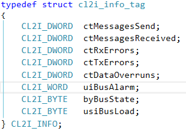
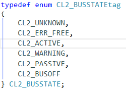
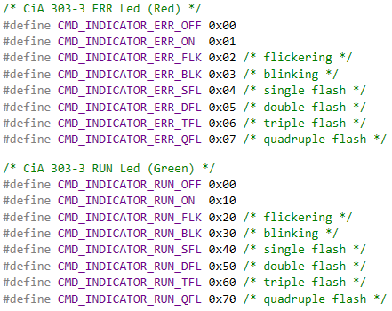
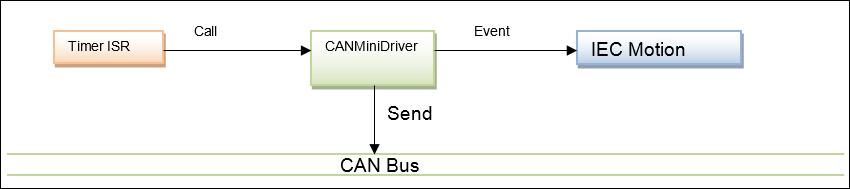
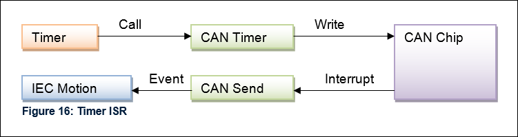

Optional Functions¶
The following chapter describes all optional functions of a CANMiniDriver.
Diagnosis¶

Figure 13: Diagnosis structure
Diagnostic Counter¶
The following diagnostic counters are defined (see also Figure 13: Diagnosis structure):
- ctMessagesSend:should be incremented when a message was successfully sent.Should be set to 0 when driver will be disposed.For drivers with Tx IRQ: Increment it in TX IRQ handler;For drivers without IRQ: Increment it in CMD_Send
- ctMessagesReceived:Should be incremented when a message was successfully received and passed to CL2 by calling MsgPutRQueue.
- ctRxErrors:Should be set to the value of the CAN chip’s Rx Error register.
- ctTxErrors:Should be set to the value of the CAN chip’s Tx Error register.
- ctDataOverruns:Number of dismissed receive messages.Should be incremented when message was received by chip, but no message handle could be allocated and if the chip signals a data overrun situation (if supported).
- usiBusLoad:Current bus load in percent.Currently not implemented on drivers provided by CODESYS.
Bus State¶
Another very important component of the CL2I_INFO structure is the variable byBusState. It holds the current state of the associated CANbus. The following values can be set by the CANMiniDriver implementation:

Figure 14: Bus State
- UNKNOWNThe state of the network is not known or the bus state is not implemented by driver.
- ERR_FREENo occurrence of CANbus errors so far. The error counters of the chip are zero.
- ACTIVEOnly a few CANbus errors so far. The error counters of the chip are below the warning level.
- WARNINGOccurrence of some CANbus errors. The error counters are above the warning level.
- PASSIVEToo many CANbus errors. The error counters are above the error level.
- BUSOFFThe node has been separated from the CANbus. The error counter has exceeded the permitted maximum.
CMD_ResetAlarm: Bus Alarm Handling¶
A CANopenStack calls ResetAlarm each bus cycle as long as GetBusAlarm returns true. This has to be considered when implementing ResetAlarm.
- If a CANMiniDriver supports the detection of bus alarms and CMD_ResetAlarm is implemented, then set CMD_SUPPORT_BUSALARM flag in CMD_GetInfo.Otherwise, CMD_ResetAlarm has to return CMD_NOT_IMPLEMENTED.
static CAA_ERROR CMD_ResetAlarm(CL2I_BYTE byNet)
{
CAA_BYTE byDriver = s_byDriver[byNet];
CL2I_INFO* pInfo = s_pInfo[byDriver];
XXX_INFO pDriver = &xxxDriverContext[byDriver]
if (!pInfo)
{
return CMD_SETUP_ERROR;
}
/* This driver */
xxxDriverContext[byDriver].reset_current = CAL_SysTimeGetMs();
if (pDriver->reset_last != 0 && (pDriver->reset_current - pDriver->reset_last) < 1000)
{
return CMD_NO_ERROR;
}
if (pInfo->uiBusAlarm > 0)
{
pDriver->reset_last = pDriver->reset_current;
/* This is just an example for getting a driver into normal operating mode */
CMD_Dispose(byNet);
CMD_Init(byNet, pDriver->wBaudrate);
/*
For drivers without IRQ: Empty Tx Queue after bus alarm.
For IRQ driver: Call MsgSendAcknIRQ in IRQ Handler when bus error is fixed.
*/
CAL_CL2_MsgSendAcknNoIRQ(byNet, CAA_hINVALID);
}
pInfo->uiBusAlarm = 0;
return CMD_NO_ERROR;
}
CMD_SetStatus: LEDs¶

Figure 16: LED flags
CMD_SetBlock, CMD_SetCycle¶
Return CMD_NOT_IMPLEMENTED if function is not supported.
Usage of CMD_SetBlock, CMD_SetCycle for CANopen Sync messages¶
By default, CANopen Sync messages are sent cyclically from the IEC bus cycle task. This means that, under poor circumstances, the CANopen Sync messages will have a jitter that is equal to the jitter of this cyclically called task.
In order to generate a more accurate sync signal, it is possible to generate those packets externally from a hardware timer and to trigger the CAN task from this timer.

Figure 19: External Sync Overview
When sync is enabled in a CANopen project, the 3S CANopen stack attempts to enable the external sync mechanism of the CAN driver. This will be successful if the driver implements the following two functions of the CAN L2 driver API:
CMD_SetBlock()
CMD_SetCycle()
The function CMD_SetBlock() is called to pass the sync message to the driver. CMD_SetBlock() receives a block handle from a message block that contains the sync message. This function takes control of the passed block handle. This control is given back to the calling function at the next call of CMD_SetBlock().
The function CMD_SetCycle() is called by CL2 to define the cycle time in which a sync packet will be generated. This time value is given in microseconds and should be used to program a hardware timer.
Within the timer ISR, the CAN driver needs to send the packet to the CAN. After a send interrupt has signaled that the sync packet was sent, the driver needs to send an event to the motion task.

Figure 20: Timer ISR
CAN Timer ISR example:
s_pClonedSyncBlock = CAL_CL2_MsgClone( CanNet, pSavedSyncBlock,&error );
if(error == CL2_NO_ERROR)
{
CMD_Send( CanNet, s_pClonedSyncBlock, 0, 0);
}
CAN Send ISR:
if(s_pSyncBlockCloned == hBlock)
{
/* Wake up the Motion Task */
if((s_hEventCanSync != RTS_INVALID_HANDLE))
{
CAL_SysEventSet(s_hEventCanSync);
}
}
When you are using a target with external sync, you are creating a motion task which is triggered by an external event. But this also means that you will not define a cycle time for this task. This time will be implicitly defined with the external sync period.
However, because the SoftMotion stack needs to know the cycle time of the task on which it is running, you need to set this time within your CAN driver manually. This can be done directly in the function CMD_SetCycle() because you get the sync period in this function.
To get the task handle of the motion task, as well as the sync event, you need to register on the event “TaskCreateDone” of “CmpSchedule”. You should search for your event name and save a handle to this event, as well as to the task handle, in a static variable of the driver.
Example of CMD_SetCycle():
/* set cycle time of IEC task */
if(s_hTaskCanSyncInfo != NULL)
s_hTaskCanSyncInfo->tInterval = dwCycle;
/* program hardware timer */
/* xxx */